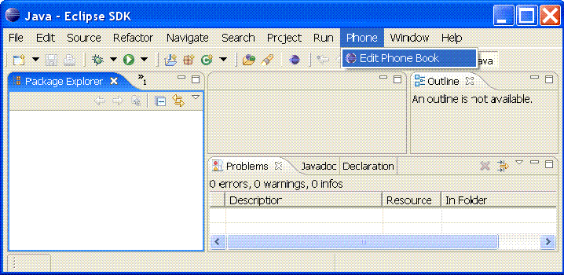
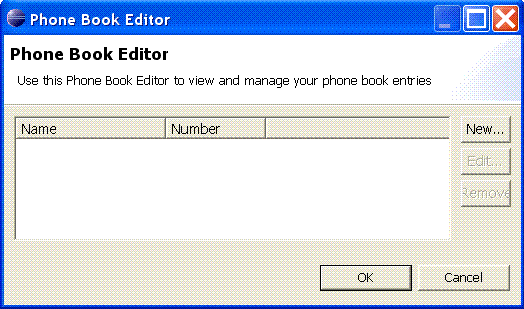
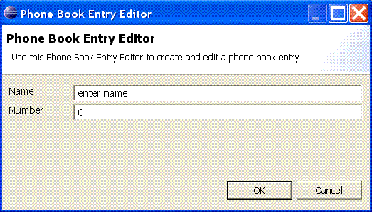

Introduction
It's generally accepted that writing tests as part of software development is a very good thing indeed. It's also generally accepted that automating the running of tests in an automated or nightly build is good engineering practice. Let's face it, if tests are not run automatically then there's a good chance they won't be run at all, and tests that are not run are next to useless.
The Eclipse Plug-in Development Environment (PDE) provides a excellent framework for developing plug-ins and also provides facilities to write and run PDE unit tests for your plug-ins that can be run from within the Eclipse environment.
Once you have taken the time and effort to write these valuable PDE unit tests, how do you automate the running of these PDE unit tests so that you can integrate them into your automated build?
Searching the web provides several options for automating PDE tests such as:
- Markus Barchfeld's excellent Build and Test Automation for plug-ins and features article which details setting up automatic building and testing for an Eclipse plug-in using the Eclipse headless build.
- Eclipse Test Framework.
- Patrick Paulin's RCP Quickstart post on Running Automated Tests with PDE Build.
- Some more excellent links can be found at 6 Great Links for Eclipse Build Automation with PDE Build.
As you can see writing PDE Tests can be complex, running PDE Tests from the command line can be complex too, but running them and collecting the results in a format that can be easily interpreted (e.g. Junitreport format) is even more difficult.
This article provides a detailed example application, the enabling technology to collect and format test results (see PDE Test Utilities ), and a build system that demonstrates a generic mechanism for running PDE Tests using Ant, allowing you to integrate it with any Ant build system.
This PDE Test technique provides the following benefits:
- Allows you to run your PDE Tests from the command line
- Allows you to collect the PDE Tests results in a format that can be easily interpreted (i.e. Junitreport format)
- Allows you to integrate PDE Tests into any Ant-based build system
Note: all the techniques and examples detailed in this article have been tested against Eclipse 3.3 (specifically Eclipse 3.3.2 and 3.3.1.1) on Windows XP only and using Ant 1.7.0 . There is also an Eclipse 3.1 version of the example code.
Overview
PDE unit tests are automated as follows:
Prerequisites:
- A dedicated PDE test Eclipse installation that is only used by the automated build system.
- For each Eclipse plug-in A that is to be tested, an Eclipse plug-in fragment A-test for A that only contains the PDE unit tests and their test dependencies for the plug-in A.
- A pre-defined (or specified) PDE test port.
- A PDE test listener class to listen on the PDE test port for the results from the PDE test run.
- A list of PDE test classes to be run as part of the PDE Test run
Running the PDE unit tests:
See Figure 1 below for a visual representation of the PDE test steps.
- Deploy plug-in A and plug-in fragment A-test into a pristine PDE test Eclipse installation.
- Select PDE test port (or use predefined reserved port).
- Start the PDE test listener process that listens on the PDE test port.Startup the PDE test Eclipse installation, specifying the list of unit test classes to be run, and the PDE test port to output test progress and results to.
- The PDE test Eclipse installation starts up and automatically runs the specified tests and outputs the results to the PDE test port where the PDE test listener process captures the results and outputs them in standard Ant junit task XML format.
- Run the regular Ant junitreport task on the generated test results XML files.
- That's it: you now have a typical Ant JUnit HTML report containing your PDE unit test results.
Prerequisites
This section describes the prerequisites for using this technique in more detail.
Dedicated PDE test Eclipse installation
In order to run the PDE Tests you need a separate Eclipse installation whose sole purpose is for running the PDE Tests. Having a dedicated Eclipse installation provides a pristine and repeatable test environment and avoids any possible conflicts or corruption that might occur with a typical development Eclipse installation.
Use an Eclipse plug-in fragment for the PDE Unit Tests for a plug-in
This technique promotes the use of Eclipse plug-in fragments to develop PDE Unit tests for plug-ins, so for each Eclipse plug-in A that is to be tested, an Eclipse plug-in fragment A-test for A that only contains the PDE unit tests and their test dependencies for the plug-in A.
You can of course develop the PDE tests directly in the plug-in (in a test directory), but this can lead to unwanted dependencies in your plug-in and involves slightly more complicated packaging for your plug-in (i.e. without test classes and test dependencies).
The Eclipse plug-in fragment approach avoids these pitfalls and although it requires a little more setup initially it provides a cleaner and clearer mechanism for defining PDE Tests and also provides a straightforward way for the build system of identifying which plug-ins have PDE Tests associated with them.
For a good description and more general discussion of using Eclipse plug-in fragments for testing, see Patrick Paulin's RCP Quickstart article Testing Plug-ins with Fragments.
PDE test port
In order for the PDE test runner and the PDE test listener
processes to communicate, both processes need to use a predefined or
specified port so that the PDE test runner can send the test progress
and results to the PDE test listener process. In the example code
we use a utility class pde.test.utils.PDETestPortLocator
in the pde.test.utils
plug-in to find an available port and this is used by the PDE test runner
and PDE test listener processes to communicate.
PDE test listener process
In order to be able to monitor and record the progress and results of the PDE test run, you need a PDE test listener process that listens on the specified port to collect PDE test progress and results from the PDE test runner process. Ideally the PDE test listener process should provide the results of the PDE test run in a manner that is easy to interpret should any of the tests fail.
The pde.test.utils.PDETestResultsCollector
class (using the pde.test.utils.PDETestListener
class) in the pde.test.utils
plug-in, provides the PDE test listener process that listens on the
specifed port for test results from the PDE test runner process and
handles them using the org.apache.tools.ant.taskdefs.optional.junit.JUnitTest
and org.apache.tools.ant.taskdefs.optional.junit.XMLJUnitResultFormatter
classes (available from Apache Ant API) to provide the results in the
same XML format that is output by the Ant junit
task. These XML result files can then be used by the Ant junitreport
task to provide an HTML report of
the PDE test run that is very easily interpreted.
For example to run the PDE test listener process from the command line for our example PDE tests would similar to:
java -classpath ... pde.test.utils.PDETestResultsCollector PhoneBookExample-test 1623
PDE test runner process
Eclipse provides a mechanism for running tests from the command
line using the main Eclipse launcher class to launch the org.eclipse.pde.junit.runtime.uitestapplication
application, this is the PDE test runner process. The PDE test runner
process is passed details of the port to publish test progress and
results to for listeners to analyse, the plug-in name being tested and
the names of the PDE test classes to run.
For example to run the PDE test runner process from the command line for our example PDE tests would similar to:
java -classpath ...\eclipse\plugins\org.eclipse.equinox.launcher_1.0.1.R33x_v20080118.jar org.eclipse.equinox.launcher.Main -application org.eclipse.pde.junit.runtime.uitestapplication -data ...\PhoneBookExample-test\target\reports\test/output/ws -dev bin -clean -port 1623 -testpluginname PhoneBookExample -classnames phonebookexample.dialogs.PhoneBookEntryEditorDialogTest
PDE Tests classes list
The PDE test runner process takes as a parameter a comma
separated list of the test classes to run in a PDE test run. In the
example code, the name of the single test class to be
run is hardcoded i.e. phonebookexample.dialogs.PhoneBookEntryEditorDialogTest
but the generation of the list of PDE test classes could easily be
automated.
Running PDE Unit Tests in Ant
This section describes the Ant build file in the example code that runs the PDE Tests and explains the key Ant targets involved. See Figure 1 above for a visual representation of the steps involved in running PDE tests in Ant.
The example code featuring full source and Ant build files for a project containing PDE unit tests can be found in the accompanying PDETestExampleProjects-3.3.zip ZIP file.
Note: that the PDETestExampleProjects-3.3.zip ZIP file contains a full standalone project complete with an Ant build system (see zip contents below for more details). Unzip the contents into a directory that is separate from your Eclipse installation and workspace.
Ant script that runs PDE Unit tests
The following Ant excerpt is from the Ant build file used to run the PDE unit tests in the PhoneBookExample-test plug-in fragment for the PhoneBookExample plug-in (see projects\PhoneBookExample-test\build.xml in the accompanying ZIP file):
<!-- Build file for the Phonebook Example plug-in PDE unit test fragment -->
<project name="phonebookexampletest" default="help" basedir=".">
...
<target name="pde_test">
 <delete>
<fileset dir="${test.eclipse.dir}/configuration" includes="**/*" excludes="config.ini"/>
<fileset dir="${test.eclipse.dir}/plugins" includes="PhoneBookExample*.jar"/>
<fileset dir="${test.eclipse.dir}/plugins" includes="pde.test.utils*.jar"/>
</delete>
<!-- Load plugin and pde tests plugin fragment into test eclipse installation -->
<copy todir="${test.eclipse.dir}/plugins" overwrite="true">
<fileset dir="${published.plugins.dir}"/>
</copy>
<delete file="pde_test_port.properties"/> <!-- properties file generated by PDETestPortLocator class in pde.test.utils -->
<delete>
<fileset dir="${test.eclipse.dir}/configuration" includes="**/*" excludes="config.ini"/>
<fileset dir="${test.eclipse.dir}/plugins" includes="PhoneBookExample*.jar"/>
<fileset dir="${test.eclipse.dir}/plugins" includes="pde.test.utils*.jar"/>
</delete>
<!-- Load plugin and pde tests plugin fragment into test eclipse installation -->
<copy todir="${test.eclipse.dir}/plugins" overwrite="true">
<fileset dir="${published.plugins.dir}"/>
</copy>
<delete file="pde_test_port.properties"/> <!-- properties file generated by PDETestPortLocator class in pde.test.utils -->
 <java classname="pde.test.utils.PDETestPortLocator" fork="yes" classpathref="pde.test.port.locator.class.path"/>
<waitfor maxwait="10" maxwaitunit="second" checkevery="100" checkeveryunit="millisecond">
<available file="pde_test_port.properties"/>
</waitfor>
<property file="pde_test_port.properties"/>
<echo message="Using port ${pde.test.port} for listening to PDE Test run"/>
<parallel>
<daemons>
<java classname="pde.test.utils.PDETestPortLocator" fork="yes" classpathref="pde.test.port.locator.class.path"/>
<waitfor maxwait="10" maxwaitunit="second" checkevery="100" checkeveryunit="millisecond">
<available file="pde_test_port.properties"/>
</waitfor>
<property file="pde_test_port.properties"/>
<echo message="Using port ${pde.test.port} for listening to PDE Test run"/>
<parallel>
<daemons>
 <antcall target="run_pde_test_listener"/>
</daemons>
<sequential>
<sleep seconds="5"/> <!-- Give the listener a few seconds to start up -->
<antcall target="run_pde_test_listener"/>
</daemons>
<sequential>
<sleep seconds="5"/> <!-- Give the listener a few seconds to start up -->
 <antcall target="run_pde_tests"/>
</sequential>
</parallel>
<antcall target="run_pde_tests"/>
</sequential>
</parallel>
 <delete>
<fileset dir="${test.eclipse.dir}/plugins" includes="PhoneBookExample*.jar"/>
<fileset dir="${test.eclipse.dir}/plugins" includes="pde.test.utils*.jar"/>
</delete>
<mkdir dir="${test.reports.dir}"/>
<delete>
<fileset dir="${test.eclipse.dir}/plugins" includes="PhoneBookExample*.jar"/>
<fileset dir="${test.eclipse.dir}/plugins" includes="pde.test.utils*.jar"/>
</delete>
<mkdir dir="${test.reports.dir}"/>
 <move todir="${test.reports.dir}">
<fileset dir=".">
<include name="**/TEST-*.xml"/>
</fileset>
</move>
</target>
<target name="run_pde_test_listener">
<java classname="pde.test.utils.PDETestResultsCollector" fork="yes" classpathref="pde.test.listener.class.path">
<arg line="${plugin.name} ${pde.test.port}"/>
</java>
</target>
<target name="run_pde_tests">
<property name="test.classes.list" value="phonebookexample.dialogs.PhoneBookEntryEditorDialogTest"/>
<mkdir dir="${test.reports.dir}/output/ws"/>
<java dir="${plugin.dir}" classname="org.eclipse.equinox.launcher.Main" fork="yes" classpathref="equinox.launcher.class.path">
<arg line="-application org.eclipse.pde.junit.runtime.uitestapplication -data ${test.reports.dir}/output/ws -dev bin -clean -port ${pde.test.port} -testpluginname PhoneBookExample -classnames ${test.classes.list}"/>
</java>
</target>
...
</project>
<move todir="${test.reports.dir}">
<fileset dir=".">
<include name="**/TEST-*.xml"/>
</fileset>
</move>
</target>
<target name="run_pde_test_listener">
<java classname="pde.test.utils.PDETestResultsCollector" fork="yes" classpathref="pde.test.listener.class.path">
<arg line="${plugin.name} ${pde.test.port}"/>
</java>
</target>
<target name="run_pde_tests">
<property name="test.classes.list" value="phonebookexample.dialogs.PhoneBookEntryEditorDialogTest"/>
<mkdir dir="${test.reports.dir}/output/ws"/>
<java dir="${plugin.dir}" classname="org.eclipse.equinox.launcher.Main" fork="yes" classpathref="equinox.launcher.class.path">
<arg line="-application org.eclipse.pde.junit.runtime.uitestapplication -data ${test.reports.dir}/output/ws -dev bin -clean -port ${pde.test.port} -testpluginname PhoneBookExample -classnames ${test.classes.list}"/>
</java>
</target>
...
</project>
The key elements of this Ant build file are identified above:
| This prepares for the PDE test run by deleting all previously deployed plug-ins from the plugins directory of the dedicated test installation of Eclipse. | |
| This copies the set of plug-ins under test (including the test fragment) into the plugins directory of the test installation of Eclipse. | |
| This discovers an available port for the PDETestListener to listen on - it does it by launching a simple java class (PDETestPortLocator) to detect the next available port and stores it as a property pde.test.port in the pde_test_port.properties file. This property is then loaded from the pde_test_port.properties file and is used in the test run. | |
| This step launches the PDETestListener in a separate thread (using the Ant parallel & daemons tasks) to listen for test results on the port identified by the pde.test.port property (see Label 3 above) | |
| This is the actual step that runs the
PDE Unit tests and specified that the results should be published to
a listener using the port identified by the pde.test.port property
(see Label 3 above). Note: that the list of test classes needs to be specified for the test run, this can easily be automatically generated. |
|
|
After the PDE test run the test installation of Eclipse is cleaned up by deleting all the deployed plug-ins from the plugins directory. |
| Copy the test results to a directory for processing by the Junitreport Ant task. |
PDETestExampleProjects-3.3.zip Contents
The ZIP file contains 3 separate plug-ins (each with their own Ant build.xml file) and an overall Ant build.xml file that coordinates the build and test of the 3 plug-ins.
| Contents | Type | Description |
|---|---|---|
| pde.test.utils | Plug-in | Provides the PDE test utilities used by Ant to run the PDE
unit tests, including the following classes:
|
| PhoneBookExample | Plug-in | This is the main Eclipse plug-in PhoneBook example
application, including the following classes:
For further details on the example application see Appendix A below. |
| PhoneBookExample-test | Plug-in Fragment | This is the Eclipse plug-in fragment for the PhoneBook plug-in
that contains the PDE unit tests for the PhoneBook GUI, including the
following test classes:
For further details on PDE Unit tests for the example application see Appendix B below. |
| build.xml | Ant build file | Overall Ant build file, that provides targets that coordinates the building and testing of the 3 plug-ins |
| readme.txt | Readme file | Provide basic information on how to run the example |
| project.properties | properties file | Specifies the target Eclipse and pde.test.utils versions used in this project. |
PDE Test Utilities (pde.test.utils)
This plug-in contains a set of utilities that help automate the running and monitoring of PDE Unit tests.
PDETestPortLocator
This class is responsible for discovering the next available port on a system, creating a properties file called pde_test_port.properties and writing a property called pde.test.port into the file and setting it to the value of the next available port. This port is then used by the Eclipse test runner process when publishing the progress and results of tests and the PDE test listener process listens on the port and processes the test results.
PDETestListener
This class is responsible for listening on a specified port as an Eclipse test listener and outputting the results of the test run in the same XML format that is output by the Ant junit task. The test result XML files can then be converted into an easily interpreted HTML JUnit report by the Ant junitreport task.
PDETestResultsCollector
This class is responsible for starting the PDETestListener on the specified port, for a PDE test run. The PDETestResultsCollector process takes 2 parameters as follows:
- PDE Test suite name - this is just a string that identifies the PDE test suite name - usually the plug-in fragment name, e.g. PhoneBookExample-test in our example code.
- port number - specifies the port that the PDE test runner process uses to publish PDE test progress and results, the PDE test listener process listens on the port to process the test results.
Conclusion
As stated in the introduction, there are several options available for automating PDE tests; some more complex than others. The technique detailed in this article provides another choice for build system engineers. It delivers the following benefits:
- Allows you to run your PDE Tests from the command line
- Allows you to collect the PDE Tests results in a format that can be easily interpreted (i.e. Junitreport format)
- Allows you to integrate PDE Tests into any Ant-based build system
Appendix A: Example Application - Simple Phonebook Application (PhoneBookExample)
The example application is a simple PhoneBook application and some simple GUI PDE Tests. The aim of this article is to show how you can integrate your PDE unit tests into an Ant build. In consideration of this, the example application and it's PDE unit tests have been deliberately kept as simple as possible.
The PhoneBook application is simple tool to store names and their associated phone numbers. The application adds a simple "Phone" menu item to the main menu as follows:

Clicking on "Edit Phone Book" menu item causes the Edit PhoneBook Dialog to be displayed:

Clicking on "New" button causes the Edit PhoneBook Entry Dialog to be displayed:

Making GUI Classes testable using package protection
 Throughout the simple GUI
examples provided here, a deliberate style of making all
fields in GUI classes package protected has been followed. Making the
fields package protected allows the unit tests to access the GUI
components during a test run.
Throughout the simple GUI
examples provided here, a deliberate style of making all
fields in GUI classes package protected has been followed. Making the
fields package protected allows the unit tests to access the GUI
components during a test run.
For example, the local variables  are all package protected.
are all package protected.
package phonebookexample.dialogs;
...
public class PhoneBookEntryEditorDialog extends TitleAreaDialog {
Note that this is not an ideal solution for making your GUI classes testable, but it is simple and it works.
Appendix B: Example PDE Unit Tests (PhoneBookExample-test)
There is just a single PDE JUnit test class provided in the example (PhoneBookEntryEditorDialogTest) and most of the tests there are pretty straightforward, but there are a few tricks or techniques that do require some further explanation.
Accessing the active shell
The active shell for your
GUI under test can be accessed using the following:
PlatformUI.getWorkbench().getActiveWorkbenchWindow().getShell()
Extending the GUI class under test to access protected methods
This is a simple
technique to allow your test to gain access to protected methods in the
class under test or one of it's super classes. In the example the local
class MyPhoneBookEntryEditorDialog extends the class under test
PhoneBookEntryEditorDialog so that the tests can access the,
getButton(int id), buttonPressed() and cancellPressed() methods these
methods can then be used in the tests.
class MyPhoneBookEntryEditorDialog extends PhoneBookEntryEditorDialog {
public MyPhoneBookEntryEditorDialog(Shell parent, PhoneBookEntry phoneBookEntry) {
super(parent, phoneBookEntry);
}
@Override
protected void buttonPressed(int buttonId) {
super.buttonPressed(buttonId);
}
@Override
protected void cancelPressed() {
super.cancelPressed();
}
@Override
protected Button getButton(int id) {
return super.getButton(id);
}
}
Making GUI Classes testable using package protection
Making the local variables package protected allows the unit tests to access the GUI components during the rest run (see the earlier section for further details).
Acknowledgements
This technique for automating PDE unit tests was first developed by David Bosschaert at IONA Technologies.
I'd like to thank Edwin Dankert and Sean Boylan, both of Duolog Technologies who helped refine the technique and the article. I'd also like to thank the reviewers Edwin Dankert, David Bosschaert, Andrew Niefer of IBM and Wayne Beaton of Eclipse for taking the time to read the article and provide all the excellent feedback.